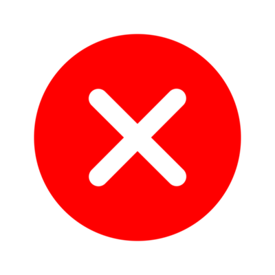

<ion-header>
  <ion-toolbar>
    <ion-title class="titleicon" style="display:inline-block"> Clear </ion-title>
    
  </ion-toolbar>
</ion-header>

<div class="ion-text-center button-container">
  <ion-text class="top-text" >¿Are you sure you want to delete your curent routine?</ion-text>
  <div class="botones">
    <ion-button  (click)="butomYes()">Yes</ion-button>
    <ion-button  (click)="butomNo()">No</ion-button>
  </div> 
  <ion-text class="second-text">¿Are you want to save your curent routine?</ion-text>
  <ion-button (click)="butomSave()">Save</ion-button>
</div>

